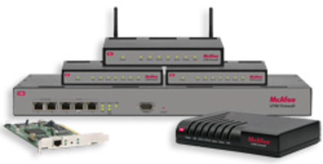

Unified Threat Management Market Handling a 15.5% CAGR

Unified threat management is an advanced approach where single component provides multiple functions.Adoption of virtual private network among end-users and advanced unified threat management solutions shall back the global market.Further, due to low deployment cost and increased adoption of smart devices, unified threat management is set to grow.
According to a new market research report published by Credence Research, the overall unified threat management market worldwide was valued at $4.50 Bn in 2018 and is set to grow with a CAGR of 15.5% during the forecast period.
Browse Full Report Originally Published by Credence Research
Market Insights
Rising adoption of the internet of things (IoT) along with increasing number of data breaches and network intrusions is driving demand for unified threat management.Due to the aforementioned reasons, the unified threat management will mark a notable growth for the unified threat management market during the forecast period.
Based on organization type, the small and medium enterprises shall hold a significant share in the small and medium enterprises segment forecast period.In the developing economies such as China and India – the growth of the segment is anticipated to boost over the forecast period.
Increased advanced threats have targeted small medium enterprises all across the globe.This has led to an increase in demand for more advanced firewalls and web security gateways.Due to this, small and medium enterprises opt for unified threat management.Thus we expect that the small and medium enterprises segment will be the fastest expanding segment during the forecast period.
Based on geography, North America is expected to dominate the unified threat management market in 2018.Due to the growth in cloud security infrastructure and high awareness on the importance of cybersecurity in the region, the demand for unified threat management is high.The Asia Pacific shall grow at a faster pace during the forecast period.The evolving trend in the IT industry in the region is ensuing the full deployment of cloud services, mobile, and other emerging technologies.Thus, we expect that the Asia Pacific region will grow significantly during the forecast period 2019-2027.
Some of the major companies profiled in the report include Barracuda Networks, Inc., Cisco Systems, Inc., Check Point Software Technologies Ltd., SonicWall, Fortinet, Inc., Huawei Technologies Co.Ltd., Untangle Inc., Juniper Networks Inc., Sophos Ltd., and WatchGuard Technologies Inc.among others.
For Any Query, Ask Our Expert
[bsa_pro_ad_space ID = 4]
Share on Facebook Tweet Follow us
Posted On: 2020-02-22T00:00:00
Posted By: Research Analysis


Content Date: 2020-02-22
Download Date: 2021-07-09
Document ID: L0C04EUO6